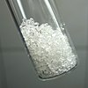

phenol

Definition: Phenol (systematically named Benzenol, also called carbolic acid or phenolic acid) is an aromatic organic compound with the molecular formula C6H5OH. It is a white crystalline solid that is volatile. The molecule consists of a phenyl group (−C6H5) bonded to a hydroxy group (−OH). Mildly acidic, it requires careful handling because it can cause chemical burns.
Source: Wikipedia
Wikipedia Page
Wikidata Page